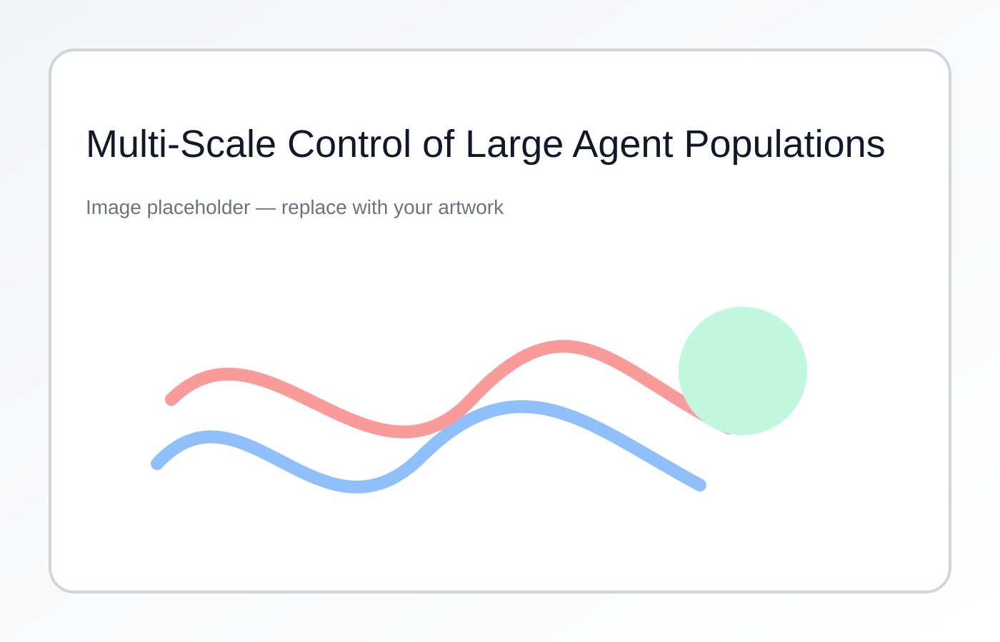

Multi-Scale Control of Large Multi-Agent Systems
Large populations of interacting agents (robots, traffic, biological collectives) require control strategies that link individual dynamics to emergent group behavior. We develop multi-scale control architectures—based on continuification and systematic macro–micro bridges—to achieve scalable control with rigorous guarantees.
Learn more